Unit 08 · Serving and sparse MoE
Lesson 08: Serving and sparse MoE
Unit: cs229s-U08. Concepts: cs229s-U08-C01 to C12.
Date: 2026-10-06. Baseline: October 6, 2026.
Claim class for every leaf: PLANNED / SOURCE ATTRIBUTION PENDING.
Family anchor: CALENDAR-ANCHORED, Week 7, Nov 04, “LLM
Serving Efficiency”, and Nov 08, “Sparse Mixture-of-Experts”.
Also Nov 11 guest lecture by Dylan Patel (SemiAnalysis).
All serving numbers are lesson toys computed here, not
vendor benchmarks. Shared bridges: P14 (transformer
mechanics), P15 (hardware and computer architecture), P16
(distributed systems and networking), at
v2-pack/shared/prerequisites/.
C01: continuous batching
Source, scope, objectives, dependencies
Calendar anchor: Week 7, Nov 04, “LLM Serving Efficiency”. Scope: iteration-level scheduling. Objective: compute completion times with and without continuous batching. Depends on P14, P16.
Motivating question and tiny toy
Question: requests arrive one by one. Must the server wait for a full batch? Toy: 4 requests arrive at t = 0, 1, 2, 3. Each needs 10 decode tokens at 0.1 s per token. Static batching waits for pairs. Continuous batching inserts on arrival.
Mental model
Static batching is a bus that leaves on a schedule: early passengers wait. Continuous batching is a taxi line: each arrival boards the next free seat, and the batch is re-formed every iteration. The GPU never idles waiting for company.
Objects, shapes, assumptions
- Arrival times a_i, tokens n_i, seconds per token s.
- Completion c_i. Latency = c_i - a_i.
- Assumption: prefill is instant in the toy (C03 adds it back).
Derivation
Continuous: req1 runs 0.0-1.0, req2 1.0-2.0, req3 2.0-3.0, req4 3.0-4.0 (each 10 * 0.1 = 1.0 s). Completions: 1, 2, 3, 4. Mean completion 2.5 s, mean latency 1.0 s. Static pairs: req1 waits for req2 (start 1.0, done 2.0), req3 waits for req4 (start 3.0, done 4.0). Completions: 2, 2, 4, 4. Mean 3.0 s, mean latency 1.5 s.
Computed example
Toy above. Continuous wins by 0.5 s mean latency (1.0 vs 1.5) and finishes the last request at the same time (4.0). The win is all in waiting, not in speed. Lab-08 asserts both means.
Implementation and checks
arr = [0, 1, 2, 3]
cont = [a + 1.0 for a in arr]
stat = [2.0, 2.0, 4.0, 4.0]
mc = sum(cont) / 4
ms = sum(stat) / 4
lat_c = mc - sum(arr) / 4
lat_s = ms - sum(arr) / 4
assert (mc, ms) == (2.5, 3.0)
assert (lat_c, lat_s) == (1.0, 1.5)
Check: latencies subtract the mean arrival 1.5. Lab-08 asserts the 0.5 s gap.
Complexity and costs
The scheduler runs per iteration: O(batch) work to pick the next set. The cost it removes is idle GPU time.
Nearest alternative and selection boundary
Nearest alternative: static batching. Selection boundary: continuous when arrivals are staggered (always in production). Static only in offline benchmarks.
Failure case and counterexample
Broken assumption: “insertion is free.” Counterexample: a huge prefill arrives mid-decode: inserting it stalls every running decode for the prefill’s duration (C03: chunk it or queue it).
Research reading and falsifiable extension
Reading: the Nov 04 serving session. Falsifiable extension: replay a bursty arrival trace through both schedulers in simulation. Hypothesis: continuous cuts mean latency, and the gap grows with burstiness. Report both.
Exercises
- E01 (recall): define iteration-level scheduling.
- E02 (numerical): toy above. Compute both mean completions and both mean latencies.
- E03 (failure diagnosis): decodes stall whenever a long prompt arrives. What is the scheduler doing wrong?
- E04 (counterfactual): all requests arrive at t=0. Does continuous still win?
- E05 (research): state the burstiness hypothesis.
Visual units
- Figure
u08_c01_taxi.png: timeline bars for both schedules. Source: original toy. Shell 8.
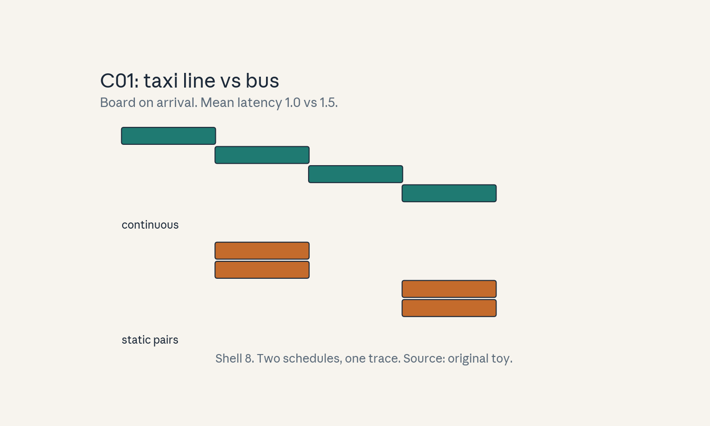
- Audit:
u08c01tof01. Before: static pairs. After: continuous insert. One rule: board on arrival.
C02: admission/backpressure
Source, scope, objectives, dependencies
Calendar anchor: Week 7, Nov 04, “LLM Serving Efficiency”. Scope: what the server does when demand exceeds capacity. Objective: compute queue depth and wait under a burst. Depends on C01, P16.
Motivating question and tiny toy
Question: 10 requests arrive at once, the server runs 4 at a time. What happens to the other 6? Toy: each request takes 1.0 s of server time. Queue FIFO.
Mental model
The waiting room has a door policy. Admission control decides who enters the running set. The rest wait. Backpressure is the signal upstream: slow down, the room is full. Without it, the queue grows until memory dies.
Objects, shapes, assumptions
- Running cap R, burst size N, service time s.
- Queue wait for position p: floor(p / R) * s.
- Assumption: FIFO, no priorities, no timeouts in the toy.
Derivation
R = 4, N = 10, s = 1.0. Positions 0-3 start at 0, done at 1. Positions 4-7 start at 1, done at 2. Positions 8-9 start at 2, done at 3. Max wait 2.0 s, mean wait (04 + 14 + 2*2)/10 = 0.8 s. Queue depth peaks at 6. Backpressure options: bounded queue (reject past K), or shed load (HTTP 429 with retry).
Computed example
Toy above: peak queue 6, max wait 2.0 s, mean wait 0.8 s. With a queue cap of 4: requests 9-10 get rejected immediately (fail fast) instead of waiting 2 s. Lab-08 asserts the waits.
Implementation and checks
def waits(n, R, s):
return [(p // R) * s for p in range(n)]
w = waits(10, 4, 1.0)
assert max(w) == 2.0
assert abs(sum(w) / 10 - 0.8) < 1e-9
assert sum(1 for x in w if x == 0) == 4
Check: 4 admitted instantly, 4 wait one round, 2 wait two. Lab-08 asserts the distribution.
Complexity and costs
Admission is O(1) per request. The cost of no policy is unbounded queue memory and latency.
Nearest alternative and selection boundary
Nearest alternative: infinite queue. Selection boundary: bounded queue with fast rejection when latency SLOs exist. Unbounded only when every request must eventually run.
Failure case and counterexample
Broken assumption: “the queue drains.” Counterexample: arrival rate exceeds service rate permanently: the queue never drains, waits grow without bound, and the server looks healthy while users time out.
Research reading and falsifiable extension
Reading: the Nov 04 serving session. Falsifiable extension: simulate arrival rates below, at, and above capacity. Hypothesis: mean wait explodes past the stability point. Report the knee.
Exercises
- E06 (recall): define admission control and backpressure.
- E07 (numerical): toy above. Compute peak queue, max wait, mean wait.
- E08 (failure diagnosis): p99 latency grows linearly for an hour. What changed in the system?
- E09 (counterfactual): queue cap = 0. What is the server?
- E10 (research): state the stability-knee hypothesis.
Visual units
- Figure
u08_c02_queue.png: burst bars draining in waves of 4. Source: original toy. Shell 2.
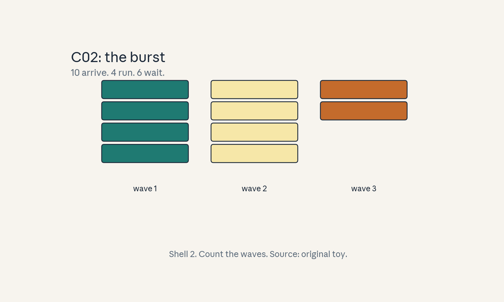
- Audit:
u08c02tof02. Before: burst of 10. After: 3 waves. One rule: 4 at a time.
C03: prefill/decode scheduling
Source, scope, objectives, dependencies
Calendar anchor: Week 7, Nov 04, “LLM Serving Efficiency”. Scope: the two phases as scheduling classes. Objective: compute phase times and the chunked-prefill split. Depends on U03, C01.
Motivating question and tiny toy
Question: prefill is a sprint, decode is a walk. How does the scheduler treat them differently? Toy: prompt 512 tokens at 2000 tok/s prefill. Decode at 50 tok/s.
Mental model
Prefill is one big parallel gulp: compute-bound, fast per token. Decode is sips: memory-bound, slow per token. A naive scheduler runs the gulp whole and every decoding request holds its breath. Chunked prefill sips the gulp: split the prompt into pieces and interleave.
Objects, shapes, assumptions
- Prefill time = prompt_tokens / prefill_rate.
- Decode time per token = 1 / decode_rate.
- Assumption: the toy rates are fixed and labeled.
Derivation
Prefill: 512 / 2000 = 0.256 s. One decode token: 1/50 = 0.02 s. A full prefill inserted among decodes stalls them 0.256 s (about 13 decode tokens of stall). Chunked into 2 x 256: each chunk 0.128 s, interleaved with decodes: max stall per chunk halves.
Computed example
Toy above: prefill 0.256 s, decode token 0.02 s, chunk halves the stall to 0.128 s. Ten decode requests each lose 0.256 s of progress under naive insertion vs 0.128 s under 2-way chunking. Lab-08 asserts the three times.
Implementation and checks
prefill = 512 / 2000
dec_tok = 1 / 50
chunk = 256 / 2000
assert abs(prefill - 0.256) < 1e-9
assert abs(dec_tok - 0.02) < 1e-9
assert abs(chunk - 0.128) < 1e-9
Check: chunk = prefill / 2 exactly. Lab-08 asserts the stall comparison.
Complexity and costs
Chunking adds scheduler bookkeeping per chunk. The cost it removes is decode stall.
Nearest alternative and selection boundary
Nearest alternative: separate prefill and decode workers (disaggregation). Selection boundary: chunking on one pool when prompts vary. Split pools when prefills are huge and steady.
Failure case and counterexample
Broken assumption: “chunks are independent.” Counterexample: chunk 2 needs chunk 1’s KV: a scheduler bug runs chunk 2 first and the attention reads garbage.
Research reading and falsifiable extension
Reading: the Nov 04 serving session. Falsifiable extension: measure decode stall vs chunk count. Hypothesis: stall falls as 1/chunks until bookkeeping dominates. Report the curve.
Exercises
- E11 (recall): define the two phases and their bounds.
- E12 (numerical): toy above. Compute prefill, decode-token, and chunk times.
- E13 (failure diagnosis): decodes stall 0.25 s on every new arrival. Name the missing mechanism.
- E14 (counterfactual): prefill rate = decode rate. Does the distinction matter?
- E15 (research): state the 1/chunks hypothesis.
Visual units
- Figure
u08_c03_phases.png: gulp bar vs sip bars, chunked split. Source: original toy. Shell 3.
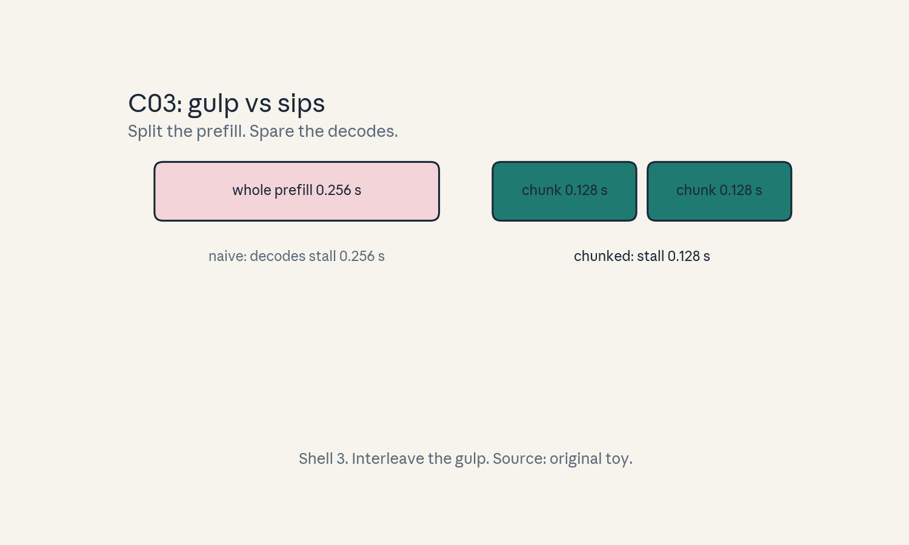
- Audit:
u08c03tof03. Before: whole gulp. After: two sips. One rule: interleave.
C04: cache management
Source, scope, objectives, dependencies
Calendar anchor: Week 7, Nov 04, “LLM Serving Efficiency”. Scope: KV-cache as a managed resource. Objective: compute per-token KV bytes and an LRU toy. Depends on U03, C02.
Motivating question and tiny toy
Question: the KV cache is finite. Who gets evicted? Toy: L = 32 layers, n = 4096, fp16. Cache holds 4 requests. Accesses: A, B, C, D, A, E.
Mental model
The cache is a parking lot with 4 spaces. Each request parks its KV. LRU evicts the car unused longest. Prefix caching pools the parking: requests sharing a prompt prefix share one parked KV.
Objects, shapes, assumptions
- Bytes per token = 2 * L * n * bytes_per_float.
- LRU: evict least recently used on miss at full.
- Assumption: whole-request eviction in the toy.
Derivation
Bytes per token = 2 * 32 * 4096 * 2 = 524,288 = 0.5 MiB. A 1000-token request parks 500 MiB. LRU toy: A miss, B miss, C miss, D miss (lot full), A hit, E miss -> evict B (unused since step 2, C used at 3, D at 4, A at 5). Hits: 1. Prefix sharing: if A and E share a 200-token prefix, 100 MiB parks once.
Computed example
Toy above: 0.5 MiB per token, 1 hit in 6 accesses, B evicted. Prefix cache saves 100 MiB on the shared prefix. Lab-08 asserts the bytes and the eviction.
Implementation and checks
bpt = 2 * 32 * 4096 * 2
assert bpt == 524288
from collections import OrderedDict
lot = OrderedDict()
evicted = None
for r in ["A", "B", "C", "D", "A", "E"]:
if r in lot:
lot.move_to_end(r)
else:
if len(lot) == 4:
evicted, _ = lot.popitem(last=False)
lot[r] = 1
assert evicted == "B"
Check: OrderedDict models LRU exactly. Lab-08 asserts the eviction.
Complexity and costs
LRU is O(1) per access. The cost of a bad policy is recompute: evicted KV must be rebuilt by prefill.
Nearest alternative and selection boundary
Nearest alternative: no eviction (admit only what fits). Selection boundary: eviction when throughput matters more than any single request’s latency. Admission-only when SLOs are hard.
Failure case and counterexample
Broken assumption: “eviction is cheap.” Counterexample: thrash: working set of 5, lot of 4: every access evicts the next needed request, hit rate 0, and the server recomputes forever.
Research reading and falsifiable extension
Reading: the Nov 04 serving session. Falsifiable extension: replay a trace under LRU vs FIFO. Hypothesis: LRU wins when reuse has locality, ties otherwise. Report both hit rates.
Exercises
- E16 (recall): write the per-token KV formula.
- E17 (numerical): toy above. Compute bytes per token and name the evicted request.
- E18 (failure diagnosis): hit rate is 0 with 5 hot requests and 4 slots. Name it.
- E19 (counterfactual): prefix cache disabled. What memory is wasted?
- E20 (research): state the LRU-vs-FIFO hypothesis.
Visual units
- Figure
u08_c04_lot.png: 4 parking spaces, B leaving. Source: original toy. Shell 1.
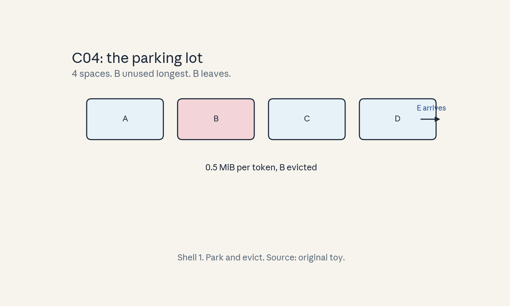
- Audit:
u08c04tof04. Before: full lot. After: B evicted. One rule: longest unused leaves.
C05: throughput/tail latency
Source, scope, objectives, dependencies
Calendar anchor: Week 7, Nov 04, “LLM Serving Efficiency”. Scope: the two numbers that matter. Objective: compute p50, p99, and throughput on a toy. Depends on P16, C02.
Motivating question and tiny toy
Question: the server handles 50 requests a second. Why do users still complain? Toy: 100 requests. 90 finish in 1.0 s, 10 finish in 3.0 s.
Mental model
Throughput is the turnstile count. Tail latency is the longest wait in line. Averages hide the tail: the mean here is 1.2 s but one user in ten waits 3 s. SLOs are written on tails, not means.
Objects, shapes, assumptions
- p50, p99: latency percentiles.
- Throughput X = completions / second.
- Little’s law: concurrency = X * mean_latency.
- Assumption: steady state.
Derivation
Mean = (901.0 + 103.0)/100 = 1.2 s. P50 = 1.0 s, p99 = 3.0 s. At X = 50 req/s: concurrency = 50 * 1.2 = 60 in flight. The 10 slow requests are the tail: find them (long prefills? cache misses?) or the p99 never moves.
Computed example
Toy above: mean 1.2 s, p50 1.0 s, p99 3.0 s, 60 concurrent at 50 req/s. Kill the tail (all at 1.0 s): concurrency falls to 50, and the same hardware serves 60 req/s at the same concurrency. Lab-08 asserts the numbers.
Implementation and checks
import statistics
lat = [1.0]*90 + [3.0]*10
mean = sum(lat)/100
p50 = statistics.median(lat)
p99 = sorted(lat)[98]
assert mean == 1.2 and p50 == 1.0 and p99 == 3.0
assert 50 * mean == 60
Check: index 98 is the 99th of 100. Lab-08 asserts Little’s law.
Complexity and costs
Percentiles are free to compute. The cost they reveal is user pain.
Nearest alternative and selection boundary
Nearest alternative: mean-only reporting. Selection boundary: never. Report p50/p99/p999 always. Means alone lie.
Failure case and counterexample
Broken assumption: “steady state.” Counterexample: a burst arrives: the queue builds, the tail stretches to minutes, and Little’s law with the old mean undercounts the pain.
Research reading and falsifiable extension
Reading: the Nov 04 serving session. Falsifiable extension: attribute the tail: tag each slow request with its cause. Hypothesis: one cause dominates (e.g. long prefill). Report the split.
Exercises
- E21 (recall): define p99 and Little’s law.
- E22 (numerical): toy above. Compute mean, p50, p99, and concurrency.
- E23 (failure diagnosis): mean is fine, p99 tripled overnight. Where do you look?
- E24 (counterfactual): all requests take 1.2 s. What changes?
- E25 (research): state the tail-attribution hypothesis.
Visual units
- Figure
u08_c05_tail.png: histogram with p50 and p99 marked. Source: original toy. Shell 2.
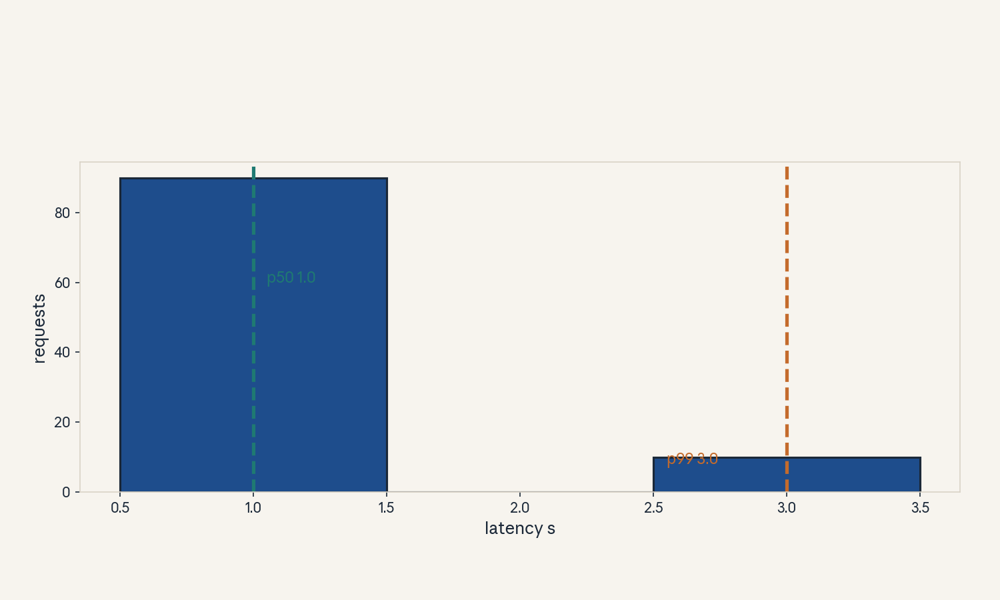
- Audit:
u08c05tof05. Before: 100 bars. After: two marks. One rule: count the tail.
C06: expert routing
Source, scope, objectives, dependencies
Calendar anchor: Week 7, Nov 08, “Sparse Mixture-of-Experts”. Scope: the gating decision. Objective: route one token through top-2 gating. Depends on P06, P11.
Motivating question and tiny toy
Question: 8 experts, but each token visits only 2. Who decides? Toy: gate logits [2.1, 0.3, 1.5, -0.2, 0.8, 1.1, -1.0, 0.1]. Top-2.
Mental model
The gate is a receptionist. It scores every expert for the token, picks the top 2, and splits the token’s weight between them by softmax. The token’s output is the weighted mix of the two chosen experts.
Objects, shapes, assumptions
- Gate: g(x) = softmax(W_g x), 8 logits.
- Top-k: keep k largest, renormalize.
- Output: sum_i w_i E_i(x).
- Assumption: the gate and experts train jointly.
Derivation
Exp of logits: [8.166, 1.350, 4.482, 0.819, 2.226, 3.004, 0.368, 1.105]. Sum = 21.52. Probs: [0.379, 0.063, 0.208, 0.038, 0.103, 0.140, 0.017, 0.051]. Top-2: experts 0 and 2. Renormalize: 0.379 + 0.208 = 0.587. Weights: 0.646 and 0.354. Output = 0.646 E_0(x) + 0.354 E_2(x).
Computed example
Toy above: token routes to experts 0 and 2 with weights 0.646, 0.354. The other 6 experts see nothing for this token: the sparsity. Lab-08 asserts the weights.
Implementation and checks
import math
logits = [2.1, 0.3, 1.5, -0.2, 0.8, 1.1, -1.0,
0.1]
exps = [math.exp(z) for z in logits]
tot = sum(exps)
probs = [e / tot for e in exps]
top = sorted(range(8), key=lambda i: probs[i],
reverse=True)[:2]
w = [probs[i] / sum(probs[i] for i in top)
for i in top]
assert top == [0, 2]
assert abs(w[0] - 0.646) < 0.002
assert abs(w[1] - 0.354) < 0.002
Check: weights sum to 1. Lab-08 asserts the routing.
Complexity and costs
Gating is one small matmul per token. The cost is load balance (C08): the gate has favorites.
Nearest alternative and selection boundary
Nearest alternative: dense (all experts always). Selection boundary: MoE when parameters must grow faster than FLOPs per token. Dense when the model is small enough to run whole.
Failure case and counterexample
Broken assumption: “the gate explores.” Counterexample: gate collapse: one expert wins early, gets all the gradient, and the other 7 starve forever.
Research reading and falsifiable extension
Reading: the Nov 08 MoE session. Falsifiable extension: track expert usage entropy during training. Hypothesis: entropy falls early (the danger zone) then recovers with the balance loss. Report the curve.
Exercises
- E26 (recall): write the top-k routing formula.
- E27 (numerical): toy above. Compute the two weights.
- E28 (failure diagnosis): 7 experts get zero tokens for an epoch. Name it.
- E29 (counterfactual): k = 8. What is the model?
- E30 (research): state the entropy hypothesis.
Visual units
- Figure
u08_c06_gate.png: 8 expert boxes, 2 lit, weights labeled. Source: original toy. Shell 3.
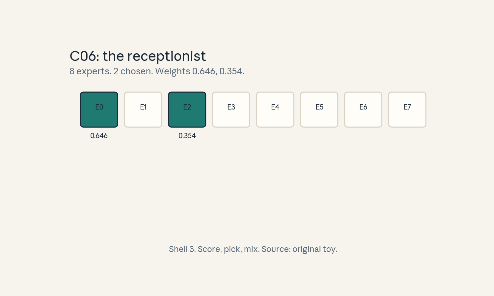
- Audit:
u08c06tof06. Before: token. After: two experts. One rule: top-2 wins.
C07: expert capacity
Source, scope, objectives, dependencies
Calendar anchor: Week 7, Nov 08, “Sparse Mixture-of-Experts”. Scope: the per-expert token budget. Objective: compute capacity and the drop rule. Depends on C06, P16.
Motivating question and tiny toy
Question: the gate loves expert 0 and sends it 40 tokens, but expert 0 fits 20. What happens to the rest? Toy: 64 tokens, 8 experts, top-2, capacity factor 1.25.
Mental model
Each expert is a checkout lane with a fixed length. Capacity is the lane length. Tokens past capacity are dropped (their expert output is skipped, the token passes through on the residual path). The factor is slack: how much overflow the lane tolerates.
Objects, shapes, assumptions
- Capacity = (tokens * k / experts) * factor.
- Dropped tokens skip the expert.
- Assumption: token counts per expert are known before dispatch in the toy.
Derivation
Balanced share: 64 * 2 / 8 = 16 tokens per expert. Capacity = 16 * 1.25 = 20. Expert 0 gets 40: 20 run, 20 drop. Drop rate at expert 0: 50%. The dropped tokens lose their expert update that step.
Computed example
Toy above: capacity 20, expert 0 drops 20 of 40. Global drop: 20/128 routed slots = 15.6%. Raise the factor to 2.0: capacity 32, drops 8: the slack costs memory (bigger buffers). Lab-08 asserts the capacity.
Implementation and checks
def capacity(tokens, experts, k, factor):
return tokens * k / experts * factor
cap = capacity(64, 8, 2, 1.25)
assert cap == 20
dropped = max(0, 40 - cap)
assert dropped == 20
Check: capacity is exact. Lab-08 asserts the drop count.
Complexity and costs
Capacity sets buffer sizes: bigger factor, more memory, fewer drops.
Nearest alternative and selection boundary
Nearest alternative: no dropping (route overflow to a second pass). Selection boundary: dropping when throughput beats per-token exactness. no-drop when drops would break quality.
Failure case and counterexample
Broken assumption: “drops are rare.” Counterexample: factor 1.0 with a spiky gate: the popular expert drops 30% every step and its weights train on a biased subset.
Research reading and falsifiable extension
Reading: the Nov 08 MoE session. Falsifiable extension: sweep the capacity factor, measure drop rate and eval. Hypothesis: eval is flat until drops pass ~5%, then falls. Report the knee.
Exercises
- E31 (recall): write the capacity formula.
- E32 (numerical): toy above. Compute capacity, drops at expert 0, and the global drop rate.
- E33 (failure diagnosis): one expert’s loss will not fall. What do its drops look like?
- E34 (counterfactual): factor = 8. What breaks?
- E35 (research): state the drop-knee hypothesis.
Visual units
- Figure
u08_c07_capacity.png: lane of length 20, 40 tokens, half dropped. Source: original toy. Shell 5.
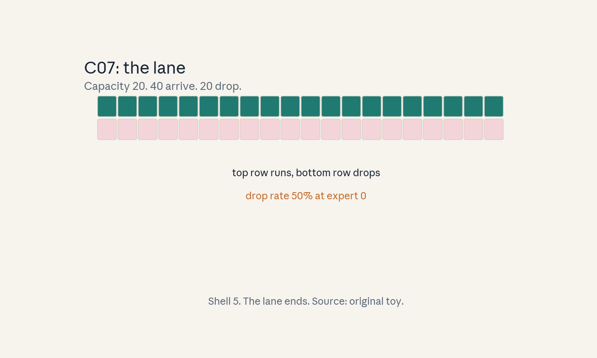
- Audit:
u08c07tof07. Before: 40 routed. After: 20 run. One rule: the lane ends.
C08: load imbalance
Source, scope, objectives, dependencies
Calendar anchor: Week 7, Nov 08, “Sparse Mixture-of-Experts”. Scope: the skew across experts. Objective: quantify imbalance on a toy. Depends on C06, C07.
Motivating question and tiny toy
Question: the gate has favorites. How bad is the skew? Toy: 8 experts, token counts [40, 10, 5, 3, 2, 2, 1, 1]. Total 64.
Mental model
Imbalance is a traffic jam at one lane while seven sit empty. The step time is set by the slowest (fullest) expert. Balance loss is the traffic cop: it taxes the gate for uneven assignments.
Objects, shapes, assumptions
- Counts c_i, mean c_bar = total / experts.
- Imbalance = max(c_i) / c_bar.
- Balance loss pushes the gate toward uniform.
- Assumption: experts cost the same per token.
Derivation
Mean = 8. Max = 40. Imbalance = 5.0. The step pays for 40 tokens of work at expert 0 while 7 experts idle: 5x the balanced cost. Balance loss toy: L_bal = experts * sum(f_i * p_i) where f_i is the fraction of tokens and p_i the mean gate prob: uniform gives 8 * 8 * (1/8)(1/8) = 1.0. the toy skew gives more.
Computed example
Toy above: imbalance 5.0x. With capacity 20 (C07), expert 0 also drops half its tokens: skew wastes time AND tokens. Lab-08 asserts the 5.0.
Implementation and checks
counts = [40, 10, 5, 3, 2, 2, 1, 1]
mean = sum(counts) / 8
imb = max(counts) / mean
assert sum(counts) == 64
assert imb == 5.0
Check: exact. Lab-08 asserts the imbalance.
Complexity and costs
The balance loss is one extra scalar per step. The cost of skew is step time and drops.
Nearest alternative and selection boundary
Nearest alternative: expert choice routing (each expert picks its top tokens). Selection boundary: token choice with balance loss (standard). expert choice when drops must be zero by construction.
Failure case and counterexample
Broken assumption: “the balance loss fixes it.” Counterexample: balance weight too high: the gate routes uniformly and experts never specialize. Too low: collapse returns.
Research reading and falsifiable extension
Reading: the Nov 08 MoE session. Falsifiable extension: sweep the balance-loss weight, plot imbalance vs task score. Hypothesis: a U-shape with a sweet spot. Report the argmin region.
Exercises
- E36 (recall): define the imbalance ratio.
- E37 (numerical): toy above. Compute mean, max, and the ratio.
- E38 (failure diagnosis): step time is 5x the estimate with 8 experts. What do the counts look like?
- E39 (counterfactual): balance weight = 0 and the gate collapses. What is the ratio?
- E40 (research): state the U-shape hypothesis.
Visual units
- Figure
u08_c08_skew.png: 8 bars, one tower. Source: original toy. Shell 2.
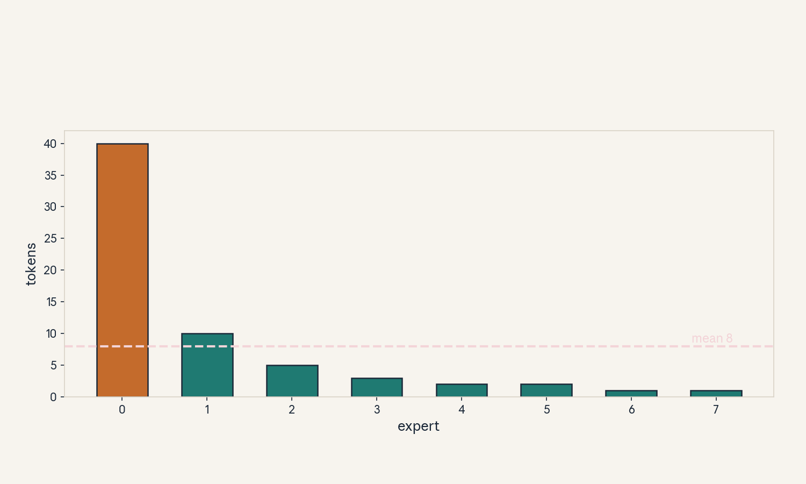
- Audit:
u08c08tof08. Before: 64 tokens. After: one lane jammed. One rule: count per lane.
C09: token dispatch
Source, scope, objectives, dependencies
Calendar anchor: Week 7, Nov 08, “Sparse Mixture-of-Experts”. Scope: moving tokens to experts. Objective: compute the dispatch bytes on a toy. Depends on C06, P16.
Motivating question and tiny toy
Question: experts live on different GPUs. How many bytes cross the wire per step? Toy: 64 tokens, top-2, d = 4096, fp16.
Mental model
Dispatch is the mailroom. Each token is copied to its 2 experts’ GPUs. Each expert’s output is mailed back. The envelopes are the activations: tokens x k x d floats, twice (there and back).
Objects, shapes, assumptions
- Bytes one way = tokens * k * d * bytes_float.
- Round trip doubles it.
- Assumption: experts sharded across GPUs (else no wire).
Derivation
One way: 64 * 2 * 4096 * 2 = 1,048,576 bytes = 1 MiB. Round trip: 2 MiB per layer per step. At 50 steps/s: 100 MiB/s of dispatch traffic per layer: the all-to-all tax on MoE.
Computed example
Toy above: 1 MiB each way, 2 MiB round trip per layer per step. 32 MoE layers: 64 MiB per step of pure dispatch. Lab-08 asserts the byte count.
Implementation and checks
one_way = 64 * 2 * 4096 * 2
assert one_way == 1048576
assert one_way * 2 == 2097152
Check: exact byte counts. Lab-08 asserts both.
Complexity and costs
Dispatch is O(tokens * k * d) bytes per layer. It is the MoE communication tax.
Nearest alternative and selection boundary
Nearest alternative: experts on the same GPU (no wire). Selection boundary: co-locate when the model fits. Shard when it does not.
Failure case and counterexample
Broken assumption: “the network keeps up.” Counterexample: slow interconnect: dispatch dominates the step and the MoE runs slower than the dense model it replaced.
Research reading and falsifiable extension
Reading: the Nov 08 MoE session. Falsifiable extension: measure step time vs k. Hypothesis: time grows with k through dispatch bytes. Report the slope.
Exercises
- E41 (recall): write the dispatch byte formula.
- E42 (numerical): toy above. Compute one-way, round-trip, and 32-layer totals.
- E43 (failure diagnosis): MoE step is slower than dense at the same FLOPs. What dominates?
- E44 (counterfactual): k = 1. What happens to dispatch and to quality risk?
- E45 (research): state the k-slope hypothesis.
Visual units
- Figure
u08_c09_dispatch.png: tokens fanning to 8 GPUs, byte label. Source: original toy. Shell 1.
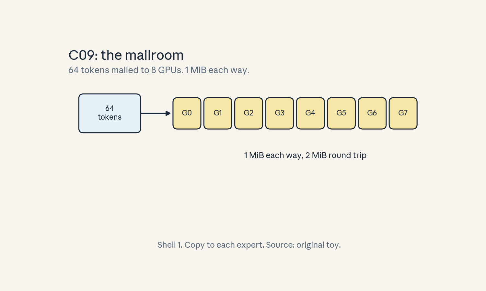
- Audit:
u08c09tof09. Before: 64 tokens. After: mailed copies. One rule: copy to each chosen expert.
C10: communication cost
Source, scope, objectives, dependencies
Calendar anchor: Week 7, Nov 08, “Sparse Mixture-of-Experts” and Nov 11 Dylan Patel guest (cluster economics). Scope: collectives vs all-to-all. Objective: compute per-GPU bytes for both. Depends on C09, P16.
Motivating question and tiny toy
Question: all-reduce and all-to-all both move data. Which costs more here? Toy: 8 GPUs, 1 MiB payload (the C09 dispatch).
Mental model
All-reduce is a group huddle: everyone ends with the same sum. Ring cost is 2*(n-1)/n * bytes. All-to-all is a mail swap: everyone sends a different piece to everyone else. Cost is about the bytes each GPU sends. Different patterns, different bills.
Objects, shapes, assumptions
- Ring all-reduce per GPU: 2*(n-1)/n * S.
- All-to-all per GPU: ~S sent (each GPU’s share).
- Assumption: full-duplex links, no congestion.
Derivation
n = 8, S = 1 MiB. All-reduce: 2 * 7/8 * 1 = 1.75 MiB per GPU. All-to-all: each GPU sends its 1 MiB split 8 ways and receives 1 MiB: ~1 MiB each way on the wire per GPU. The MoE step pays all-to-all twice (dispatch + combine). Data parallel pays all-reduce once per sync.
Computed example
Toy above: all-reduce 1.75 MiB/GPU, all-to-all ~1 MiB/GPU each way. MoE layer: 2 MiB/GPU round trip (C09). 8-way data parallel sync of a 1 MiB gradient: 1.75 MiB/GPU. Lab-08 asserts both.
Implementation and checks
def allreduce(n, S):
return 2 * (n - 1) / n * S
assert abs(allreduce(8, 1.0) - 1.75) < 1e-9
Check: the ring formula. Lab-08 asserts the 1.75.
Complexity and costs
Collectives scale with bytes and GPU count. The topology sets the constant.
Nearest alternative and selection boundary
Nearest alternative: hierarchical collectives (reduce within node first). Selection boundary: hierarchical when inter-node links are thin.
Failure case and counterexample
Broken assumption: “full duplex, no congestion.” Counterexample: all 8 GPUs blast one peer at once: incast collapse, and the measured cost is multiples of the formula.
Research reading and falsifiable extension
Reading: the Nov 11 guest session. Falsifiable extension: measure all-to-all vs all-reduce time at several S. Hypothesis: linear in S with different slopes. Report both slopes.
Exercises
- E46 (recall): write both cost formulas.
- E47 (numerical): toy above. Compute per-GPU bytes for both.
- E48 (failure diagnosis): measured all-to-all is 4x the formula. Name the likely cause.
- E49 (counterfactual): n = 2. What are the two costs?
- E50 (research): state the slope hypothesis.
Visual units
- Figure
u08_c10_collectives.png: ring vs mail swap diagrams. Source: original toy. Shell 8.
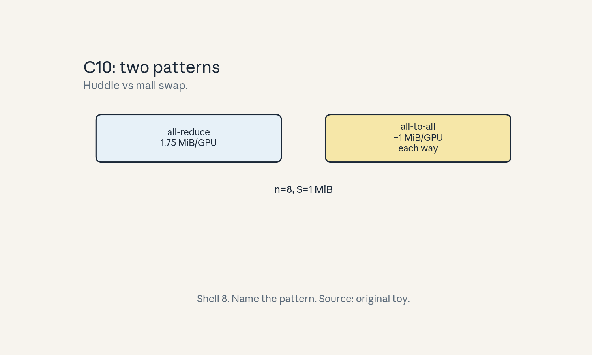
- Audit:
u08c10tof10. Before: 8 GPUs. After: bytes per GPU. One rule: name the pattern.
C11: batching effects
Source, scope, objectives, dependencies
Calendar anchor: Week 7, Nov 04, “LLM Serving Efficiency”. Scope: how batch size moves decode throughput. Objective: compute the diminishing returns on a toy. Depends on C01, P15.
Motivating question and tiny toy
Question: bigger batches, more tokens per second. Where does it stop paying? Toy: seconds per decode step t(B) = 0.005 + 0.002*B. B = 1, 4, 8.
Mental model
Decode is memory-bound: each step reads the whole model once, then does B tokens of work. Bigger B amortizes the read over more tokens, but the per-token compute term grows: the curve bends.
Objects, shapes, assumptions
- t(B) = c0 + c1*B seconds per step.
- Throughput = B / t(B) tokens/s.
- Assumption: the toy constants are labeled.
Derivation
B=1: t = 0.007, R = 142.9 tok/s. B=4: t = 0.013, R = 307.7. B=8: t = 0.021, R = 381.0. B 1->4: 2.15x. B 4->8: 1.24x. The asymptote is 1/c1 = 500 tok/s: batching approaches it but never passes.
Computed example
Toy above: 142.9, 307.7, 381.0 tok/s. Doubling from 8 to 16: t = 0.037, R = 432.4: only 1.13x. The memory for 16 KV caches may not fit anyway (C04). Lab-08 asserts the three rates.
Implementation and checks
def rate(B):
return B / (0.005 + 0.002 * B)
rs = [rate(B) for B in (1, 4, 8)]
assert abs(rs[0] - 142.9) < 0.2
assert abs(rs[1] - 307.7) < 0.2
assert abs(rs[2] - 381.0) < 0.2
assert rs[1] / rs[0] > rs[2] / rs[1]
Check: gains shrink. Lab-08 asserts the ordering.
Complexity and costs
Batching is free throughput until memory or the asymptote binds.
Nearest alternative and selection boundary
Nearest alternative: model parallelism for one request (latency). Selection boundary: batch for throughput. Shard for latency.
Failure case and counterexample
Broken assumption: “memory fits.” Counterexample: B=64 KV caches OOM: the batch that maximizes the formula does not run.
Research reading and falsifiable extension
Reading: the Nov 04 serving session. Falsifiable extension: sweep B, measure R. Hypothesis: R follows B/(c0+c1 B) with fitted constants. Report the fit.
Exercises
- E51 (recall): write the rate formula and the asymptote.
- E52 (numerical): toy above. Compute the three rates and the two gain ratios.
- E53 (failure diagnosis): B=64 OOMs. What bounds the batch in practice?
- E54 (counterfactual): c0 = 0. What is R(B)?
- E55 (research): state the fit hypothesis.
Visual units
- Figure
u08_c11_batchcurve.png: R(B) bending toward 500. Source: original toy. Shell 6.
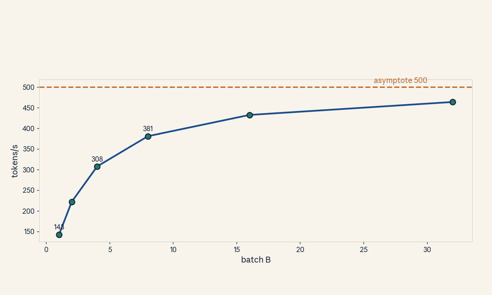
- Audit:
u08c11tof11. Before: B=1. After: the curve. One rule: amortize the read.
C12: cost per request
Source, scope, objectives, dependencies
Calendar anchor: Week 7, Nov 11, Dylan Patel guest (cluster economics). Scope: dollars per million tokens. Objective: compute it from throughput and a labeled price. Depends on C05, C11.
Motivating question and tiny toy
Question: the system serves 500 tokens/s on one GPU. What does a million tokens cost? Toy: GPU price $3/hour (labeled hypothetical, not a quote).
Mental model
Dollars per token = dollars per second divided by tokens per second. Every systems win in this unit (continuous batching, chunking, MoE sparsity) shows up in the denominator.
Objects, shapes, assumptions
- Price p $/hr (toy). Throughput R tok/s.
- Cost per 1M = 1e6 / R * p / 3600.
- Assumption: 100% utilization in the toy.
Derivation
p = 3 $/hr = $0.000833/s. R = 500 tok/s. Cost = 1e6 / 500 * 0.000833 = $1.67 per million tokens. Double throughput (batching, C11): $0.83. The price is a labeled toy. The arithmetic is the lesson.
Computed example
Toy above: $1.67/MTok at 500 tok/s, $0.83 at 1000 tok/s. A request with 512 prefill + 128 decode = 640 tokens: $0.00107 at the base rate. Lab-08 asserts the division.
Implementation and checks
def cost_per_mtok(R, dollars_per_hr):
return 1e6 / R * dollars_per_hr / 3600
c = cost_per_mtok(500, 3.0)
assert abs(c - 1.67) < 0.02
assert abs(cost_per_mtok(1000, 3.0) - 0.83) < 0.02
Check: doubling R halves cost. Lab-08 asserts both.
Complexity and costs
The formula is trivial. The inputs (real R, real p, real utilization) are the work.
Nearest alternative and selection boundary
Nearest alternative: cost per request (includes queueing and tail). Selection boundary: per-token for capacity planning. Per-request for pricing.
Failure case and counterexample
Broken assumption: “100% utilization.” Counterexample: real utilization 40%: the true cost is 2.5x the toy number.
Research reading and falsifiable extension
Reading: the Nov 11 guest session. Falsifiable extension: measure R and utilization for a week, recompute. Hypothesis: utilization dominates the gap between toy and bill. Report both.
Exercises
- E56 (recall): write the cost formula.
- E57 (numerical): toy above. Compute cost per MTok at 500 and 1000 tok/s, and per request of 640 tokens.
- E58 (failure diagnosis): the bill is 2.5x the model. Name the first suspect.
- E59 (counterfactual): price halves, R halves. What happens to cost?
- E60 (research): state the utilization hypothesis.
Visual units
- Figure
u08_c12_cost.png: cost bar halving with throughput. Source: original toy. Shell 5.
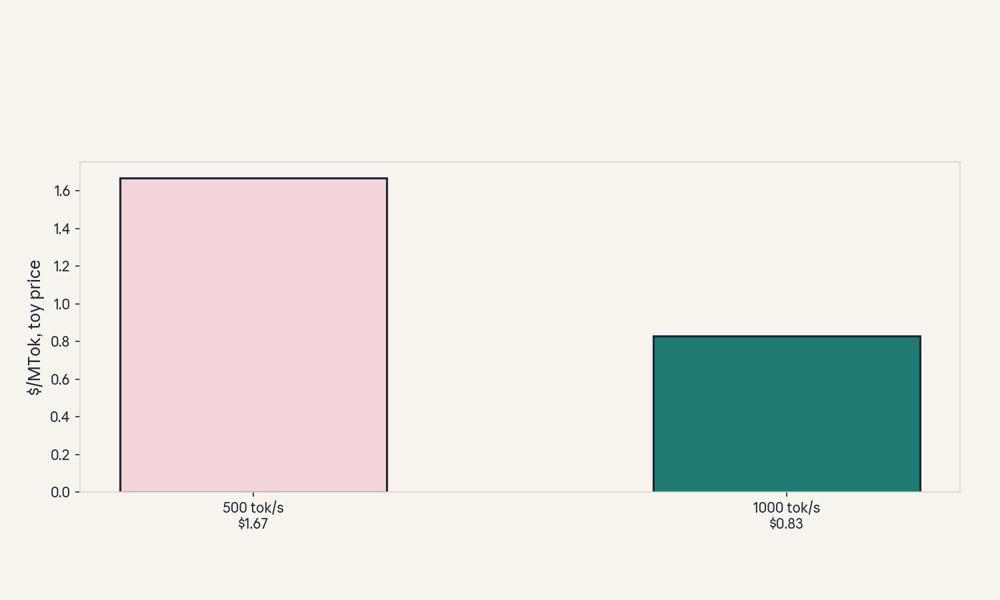
- Audit:
u08c12tof12. Before: tok/s. After: $/MTok. One rule: divide price by rate.
U08 chapter plate
Figure u08_chapter.png: the serving pipeline:
admit -> schedule (prefill/decode) -> batch ->
route (MoE) -> dispatch -> bill. Source: original.
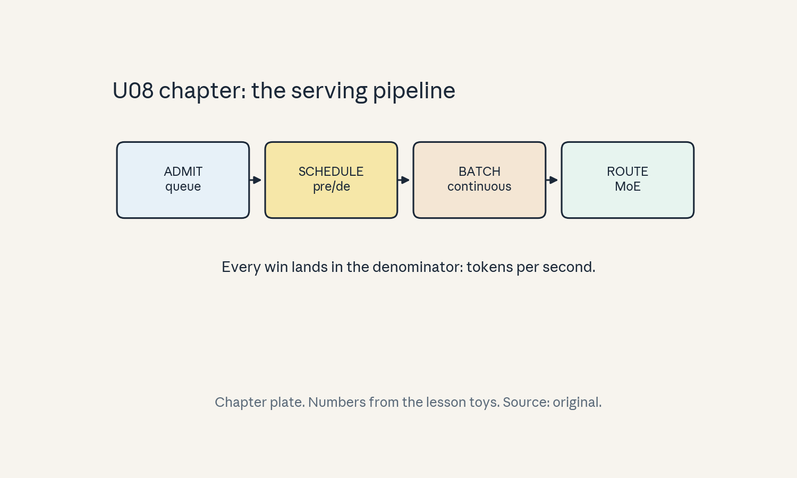
Unit-scope replication proposal (PROPOSED, not executed)
Course-level capstones live in capstones/. This
unit proposes: simulate continuous vs static
batching on a bursty trace, then measure the MoE
dispatch tax vs a dense baseline at matched
FLOPs. See lab-08.